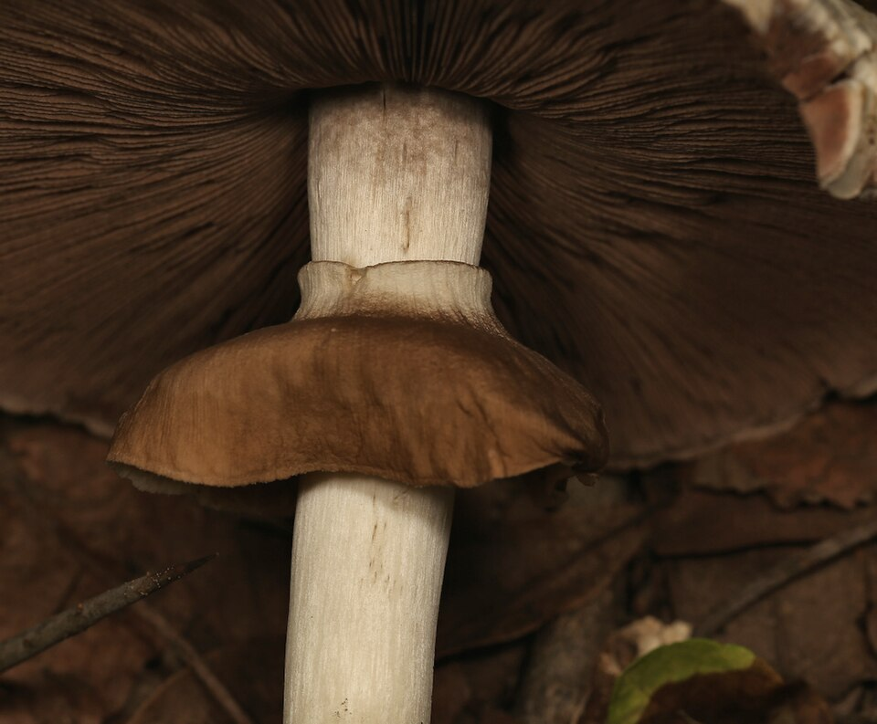
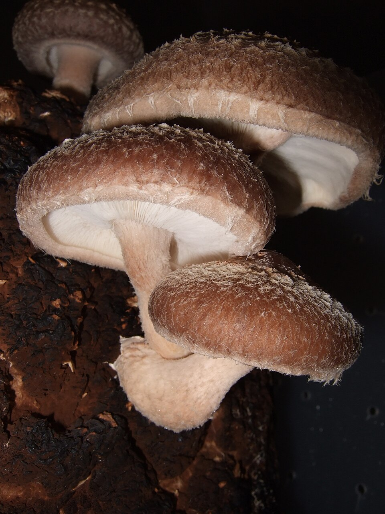

06 · 우리 버섯
어떤 버섯이든, 그 버섯에 맞게 잽니다
필요한 측정기를 골라 답니다. 예를 들면 이렇습니다.
 예: 양송이
예: 양송이
예: 신령버섯
예: 표고공기 온습도
생육 환경의 기본. 정밀형·보급형 중 선택
CO2
환기 판단. 생육 속도와 수확 시기 조절에도
암모니아
배지 발효 상태를 초기에 확인
배지 온도
뜨겁고 습한 배지 속 온도
생육 사진
정한 간격으로 자동 촬영
사진: Мыць Денис (Public domain); Wynand Uys (CC BY 4.0); frankenstoen (CC BY 2.0). 모두 Wikimedia Commons, 크기 조정. 실제 재배 사진으로 교체 예정.